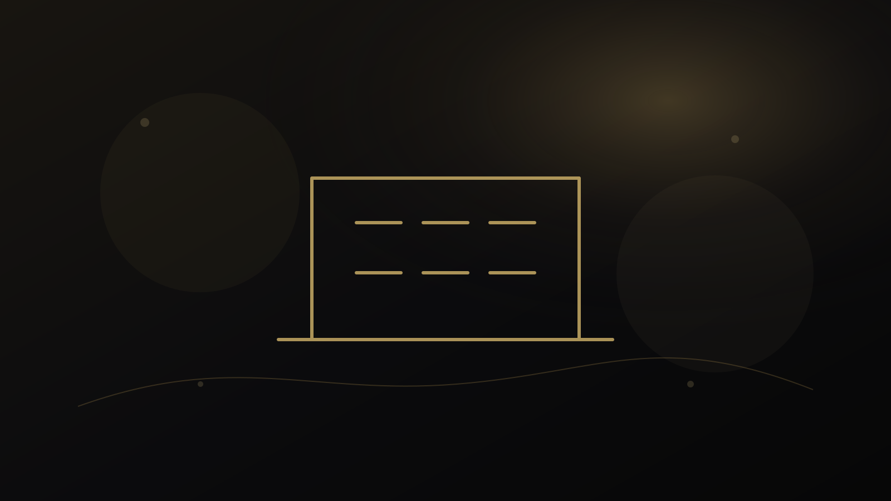
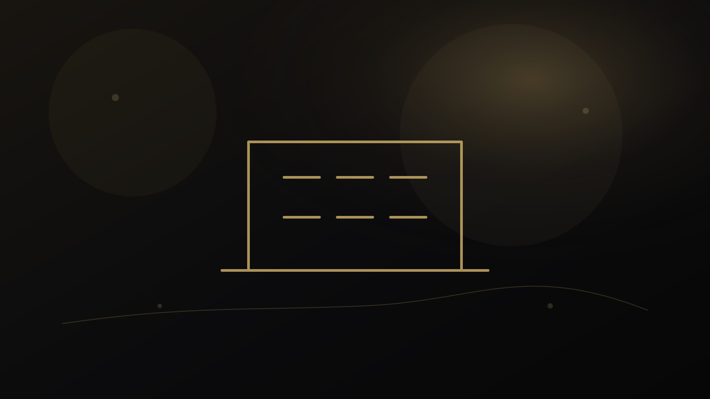
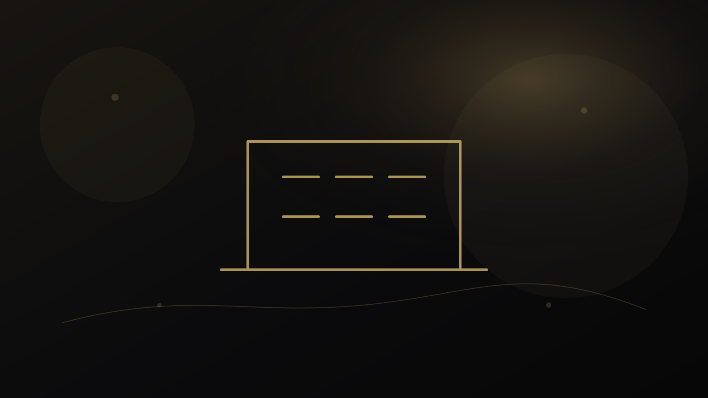
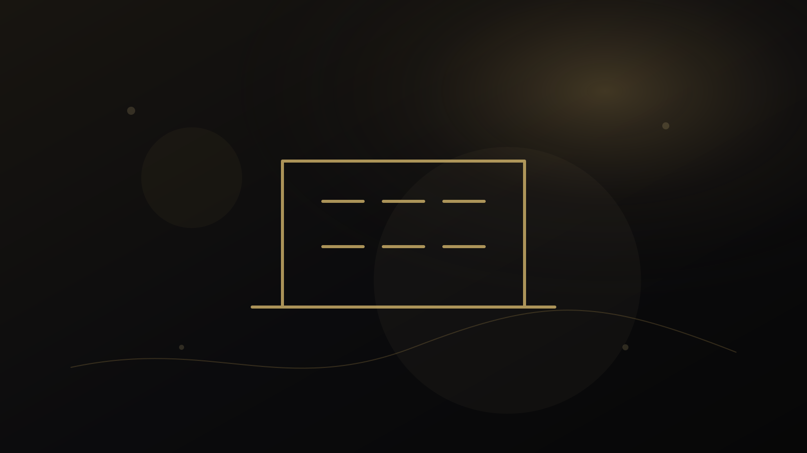

خوشه دانشی
معلم و سازمان
راهنماهای تدریس، سنجش، مواد آموزشی، توسعه حرفهای، AI، کارگاه و نظامهای آموزشی مدرسه.
راهنمای معلم و سنجش
مشاوره تخصصی برای معلمان؛ تدریس، مواد آموزشی و سنجش یادگیری
مشاوره تخصصی معلم برای مسئلههای تدریس، مواد آموزشی و سنجش؛ چگونه مسئله کلاس را با شواهد واقعی تحلیل و گزینههای قابل اجرا طراحی کنیم.
راهنمای معلم و سنجش
توسعه حرفهای معلمان و مدرسان؛ چگونه از تجربه تدریس به رشد حرفهای برسیم؟
توسعه حرفهای معلم فراتر از شرکت در دوره است؛ چرخه شواهد، بازاندیشی، قضاوت حرفهای، اقدام و بازبینی چگونه رشد واقعی را شکل میدهد.
راهنمای معلم و سنجش
یک آزمون خوب چه ویژگیهایی دارد؟ راهنمای عملی برای معلمان
یک آزمون خوب برای کلاس چه ویژگیهایی دارد؛ همراستایی با هدف، کیفیت سؤال، عدالت، قابلیت تفسیر نمره، بازخورد و استفاده مسئولانه از نتیجه.
راهنمای معلم و سنجش
چگونه مواد آموزشی و کتاب زبان را ارزیابی کنیم؟
راهنمای ارزیابی کتاب و مواد آموزشی زبان؛ هدف، مخاطب، اصالت، بار شناختی، فرصت تعامل، سنجش و امکان سازگار کردن مواد با کلاس.
راهنمای معلم و سنجش
هوش مصنوعی در تدریس؛ معلم چه چیزی را باید به AI بسپارد و چه چیزی را نه؟
کاربرد مسئولانه هوش مصنوعی در تدریس؛ کدام کارها قابل واگذاریاند، کجا قضاوت معلم ضروری است و چگونه حریم خصوصی و کیفیت یادگیری حفظ شود.
راهنمای معلم و سنجش
چگونه یک کارگاه تخصصی مؤثر برای معلمان طراحی کنیم؟
طراحی کارگاه مؤثر برای معلمان؛ از نیازسنجی و هدف قابل مشاهده تا فعالیت، تمرین، انتقال به کلاس و پیگیری پس از کارگاه.

راهنمای مدرسه و سازمان
مدارس چگونه یک نظام مسئولانه استعدادیابی دانشآموزان طراحی کنند؟
چارچوب طراحی نظام استعدادیابی مدرسه؛ هدف، منابع شواهد، نقش معلم و والد، حریم داده، مسیر رشد و پرهیز از برچسبزنی قطعی.

راهنمای مدرسه و سازمان
از داده دانشآموز تا برنامه رشد؛ مدارس چه اطلاعاتی واقعاً نیاز دارند؟
مدرسه برای طراحی برنامه رشد به چه دادههایی نیاز دارد؛ چگونه از جمعآوری افراطی داده پرهیز کنیم و شواهد را به تصمیم آموزشی قابل بازبینی متصل کنیم.

راهنمای مدرسه و سازمان
مدارس و مؤسسات آموزشی چه زمانی به مشاور آموزشی نیاز دارند؟
مشاوره آموزشی سازمانی برای مدارس و مؤسسات؛ چه زمانی مسئله نیاز به تحلیل مستقل، تعریف دامنه، آموزش، سنجش یا طراحی پروژه دارد.
راهنمای معلم و سنجش
از نمره تا بازخورد؛ چگونه سنجش را به ابزار یادگیری تبدیل کنیم؟
چگونه سنجش کلاسی را به بازخورد و تصمیم آموزشی تبدیل کنیم؛ تفاوت اندازهگیری، تفسیر، بازخورد و اقدام بعدی برای معلمان.

راهنمای مدرسه و سازمان
کارگاه تخصصی آنلاین برای مدارس و مؤسسات؛ چگونه دامنه و خروجی را درست تعریف کنیم؟
راهنمای سفارش و طراحی کارگاه تخصصی آنلاین برای مدرسه و مؤسسه؛ موضوع، مخاطب، خروجی، زمان، فعالیت، پیشنیاز و پیگیری چگونه مشخص شوند.